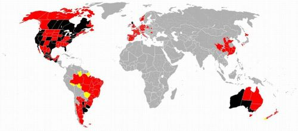
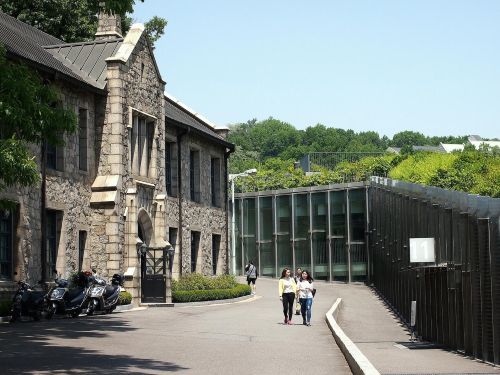

Profile
Aspiring data scientist and software developer with dual degrees in Computer Science (WGU, 2025) and Botany (Cal Poly Humboldt), and nearly 7 years of experience in utility vegetation management. Currently serving as a Quality Control Specialist at PG&E, leveraging tools like Excel, Power BI, and ArcGIS to audit inspections and drive public safety through data-informed decisions. Certified ISA Utility Specialist, TRAQ, ITIL 4, and Linux Essentials. Passionate about bridging environmental fieldwork with analytics and software development, with a growing portfolio focused on clarity, reproducibility, and real-world impact.
Home Page LinkedIn GitHub Request Access to RepoProjects
A collection of diverse projects showcasing my skills in data analysis, software development, and database management. Each project demonstrates my ability to leverage technology for real-world applications, from data cleaning and visualization to backend programming and machine learning.
Nashville Housing Data Cleaning in SQL
Cleaned the Nashville Housing dataset by standardizing dates, filling missing addresses, splitting composite fields, removing duplicates, and dropping unnecessary columns for streamlined analysis.
View ScriptCOVID-19 Data Exploration in SQL
Imported a COVID-19 dataset into SQL Server, cleaned and aggregated the data, and used SQL queries to analyze pandemic trends and prepare insights for visualization.
View Project FolderLayoffs Data Exploration in SQL
Imported a layoffs dataset into SQL Server, cleaned and standardized the data, removed duplicates, and performed exploratory analysis to uncover trends by company, industry, and time.
View Project FolderMovies Data Exploration in Jupyter Notebook
Performed correlation analysis on a cleaned movie dataset using Pandas and Seaborn. Encoded categorical features, visualized relationships with pair plots and heatmaps, and identified strong associations between budget, votes, and gross revenue.
View Jupyter Notebook
COVID-19 Dashboard Tableau Project
Designed an interactive COVID-19 dashboard in Tableau Public to visualize global cases, deaths, and infection rates by continent and country. Included time-series analysis and geospatial mapping to highlight pandemic trends through March 2021.
View Tableau ProjectLibrary & Borrowing Trends: SQL-Powered Insights
Built normalized schemas and populated data for library, employee, and environmental systems. Wrote analytical queries and views to uncover trends in borrowing, demographics, and genre popularity.
View Project FolderRelational Database Design & Querying in MySQL
Created relational schemas for user-photo logging and employee management. Used foreign keys, constraints, and sample data to model real-world relationships. Wrote queries to join tables, extract insights, and validate data integrity.
View Script in GitHubData Structures and Algorithms I - U.S. State CapitalQuiz
Developed an interactive console-based quiz application in Java that tests users on U.S. state capitals. Utilized a 2D array to store state-capital pairs, implemented bubble sort to organize data by capital, and used HashMap and TreeMap for efficient lookup and sorted display. Included randomized question order, input validation, and a query feature for retrieving capitals by state. Demonstrates core Java skills in data structures, control flow, and user interaction.
View Project FolderData Structures & Algrothims II
Built a custom package delivery system using hash tables, distance matrices, and address indexing to simulate real-time routing for WGUPS. Integrated CSV data, updated package statuses dynamically, and tracked truck mileage and delivery times. Demonstrated algorithmic thinking, data structure design, and operational modeling in Python.
View ScriptSenior Capstone Crop Recommendation System with Machine Learning
Built a predictive model using logistic regression and SVM to recommend optimal crops based on soil nutrients, climate, and pH. Explored data distributions with Seaborn, validated model accuracy (96–97%), and deployed an interactive widget interface for real-time crop prediction. Combines data science, visualization, and user interactivity.
View Jupyter NotebookVacation Booking Backend Programming with Spring Boot
Built a backend application using Spring Boot, MySQL, and RESTful architecture in a WGU lab environment. Initialized the project with Spring Data JPA, Lombok, and MySQL Driver dependencies. Structured the codebase into modular packages—controllers, entities, DAO, services, and config—aligned with UML specifications. Implemented entity classes, enums, and repository interfaces with cross-origin support. Added service-layer logic and input validation for seamless integration with an Angular front-end. Managed version control through a private GitLab repository and ensured compatibility for local development.
View Project Folder
Scripting & Programming Email Validator & Course Tracker
Built a student roster tool in C++ to parse, validate, and manage academic records. Features include email verification, average course duration calculation, and dynamic record removal using object-oriented design.
View Project FolderWork Experience
Quality Control Specialist - QC Software Tester as of 12/2023
The Pacific Gas & Electric Company
10/18/2021 - Present
As a work verifier for PG&E’s vegetation management department, I audit post-inspection and tree work completion to ensure the highest quality of work, maintaining regulatory compliance and keeping the public and PG&E facilities safe. As an Arborist, maintaining a healthy and engaged relationship with customers is very important in our line of work to ensure regulatory compliance and manage risk. I am knowledgeable and proficient in the following:
- User Acceptance Testing
- Black box Testing
- Auditing external VM contractors
- Distribution, Transmission, & VC Programs
- Regulatory Compliance
- Identifying local native tree species
- Identifying hazardous/diseased trees
- Risk Management
- Expert in tree growth rates
- Excel, Power BI, ArcGIS
- Data Analysis
Work Verifier/QC Arborist
Atlas Field Services
06/07/2021 - 10/14/2021
Contracted to the Pacific Gas and Electric Company, Atlas Field Services works with PGE's vegetation management to audit post-inspection and tree work completion to ensure the highest quality of work to maintain regulatory compliance, keeping the public and PG&E facilities safe. Maintaining a healthy and engaged customer relationship is crucial in our work as an Arborist.
- ArcGIS/Field Maps
- Identifying local native tree species
- Identifying hazardous & diseased trees
- External auditing on PGE’s vegetation management contractors
- Excel Spreadsheets
- Microsoft Programs
- ArcGIS
- Multitasking on multiple projects
Senior Consulting Utility Forester
ACRT Pacific
10/13/2019 - 05/28/2021
Contracted to the Pacific Gas and Electric Company, ACRT Pacific works with PGE's vegetation management to inspect vegetation around power lines. We prescribe tree work to maintain compliance while keeping the public and PG&E facilities safe. As a pre-inspector, maintaining a healthy and engaged customer relationship is very important in our work.
As a supervisor, I oversaw multiple projects and worked closely with PG&E representatives, tree crews, and environmental contractors. I coordinated teams, gathered pre-inspection data, submitted environmental documents for environmental reviews, and released work to tree contractors.
- Identifying local native tree species
- Identifying hazardous & diseased trees
- Internal audits on field employees
- Analyzing data
- Risk management
- Microsoft Programs
- ArcGIS & Field Maps
- Permitting approvals
- Supervising 6 or more employees
- Multitasking on multiple projects
Consulting Utility Forester
ACRT Pacific
01/15/2019 - 10/12/3019
Contracted to the Pacific Gas and Electric Company, ACRT Pacific works with PGE's vegetation management department to inspect vegetation around power lines. We prescribe tree work to maintain compliance while keeping the public and PG&E facilities safe. As a pre-inspector, maintaining a healthy and engaged customer relationship is very important in our work. I am proficient in the following areas:
- Estimating tree growth rates
- Identifying local native tree species
- Identify hazardous & diseased trees
- Navigating maps
- Navigating rugged and steep terrain
- Microsoft Programs
- ArcGIS & Field Maps
- Permitting approvals
- Multitasking on multiple projects
Consulting Utility Forester
Western Environmental Consultant
10/22/2018 - 01/2019
Contracted to the Pacific Gas and Electric Company, ACRT Pacific works with PGE's vegetation management department to inspect vegetation around power lines. We prescribe tree work to maintain compliance while keeping the public and PG&E facilities safe. As a pre-inspector, maintaining a healthy and engaged customer relationship is very important in our work. I am proficient in the following areas:
- Estimating tree growth rates
- Identifying local native tree species
- Identify hazardous & diseased trees
- Navigating maps
- Navigating rugged and steep terrain
- Microsoft Programs
- ArcGIS & Field Maps
- Permitting approvals
- Multitasking on multiple projects
Field Specialist
Redwood Community Action Agency
10/22/2018 - 01/2019
Part of the field crew is removing invasive species from our local community. The main work involved removing Spartina in the Humboldt Bay Marsh and restoring our wetland habitat. This requires using brush cutters to top cut the plant and grinding the rhizome to remove the noxious weed.
- Involved with restoring wetland habitat Martin Slough project
- Erosion and sediment control
- Experience with removing noxious weeds by using loppers to cut and spray with Roundup herbicide
Lead Biological Science Technician - GS Grade: 5
Southern Operations Center, Redwood National & State Parks
05/2017 - 09/2017
During the 2017 season, I managed a crew of seven. I surveyed, mapped, and monitored rare plant species throughout Redwood National Park. Some rare plants include Siskiyou Checkerbloom, Wolf's Evening Primrose, Oregon Coast Paint brush, and Pink Sand Verbena. Our primary responsibility was eradicating invasive plant species to help restore National and State Park's natural habitat.
Biological Science Technician - GS Grade: 5
Southern Operations Center, Redwood National & State Parks
06/2016 - 08/2016
I surveyed, mapped, and monitored rare plant species throughout Redwood National Park. Some rare plants include Siskiyou Checkerbloom, Wolf's Evening Primrose, Oregon Coast Paint brush, and Pink Sand Verbena. Our primary responsibility was eradicating invasive plant species to help restore National and State Park's natural habitat.
Biological Science Technician - Student Trainee
Humboldt State University Sponsored Programs Foundation
07/2015 - 08/2015
I surveyed, mapped, and monitored rare plant species throughout Redwood National Park. Our primary responsibility was eradicating invasive plant species to help restore National and State Park's natural habitat.
Biological Survey Technician
SHN Consulting Engineers & Geologists
06/2015 - 07/2015
Surveying the abundance and evenness of the ecology within Eelgrass beds within Humboldt Bay. Duties involved:
- Collecting data on Eelgrass density, epiphyte load, and percent cover
- Collecting water quality data such as temperature, salinity, dissolved oxygen, and turbidity
- Using GPS units to map the extent of Eelgrass beds
Education
California Polytechnic University, Humboldt - Arcata, CA
Bachelor of Science, Botany
Graduation Date: 05/2016
Western Governors University - Salt Salt City, UT
Bachelor of Science, Computer Science
Graduation Date: 06/2025
Certifications
ITIL 4 Foundation: PeopleCert
Certificate Number: GR671711662WP
Effective Date: 11/14/2024 - 11/15/2027
Linux Essentials LPI
Effective Date: 1/20/2025
Certified Arborist Utility Specialist
International Society of Arboriculture (ISA)
Effective date: 02/06/2020 - 06/30/2026
Tree Risk Assessment Qualification (TRAQ)
International Society of Arboriculture (ISA)
Effective date: 06/15/2022 - 06/15/2027